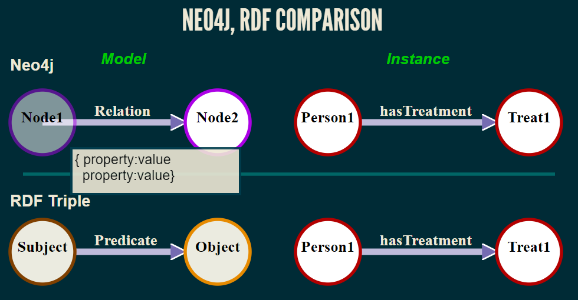
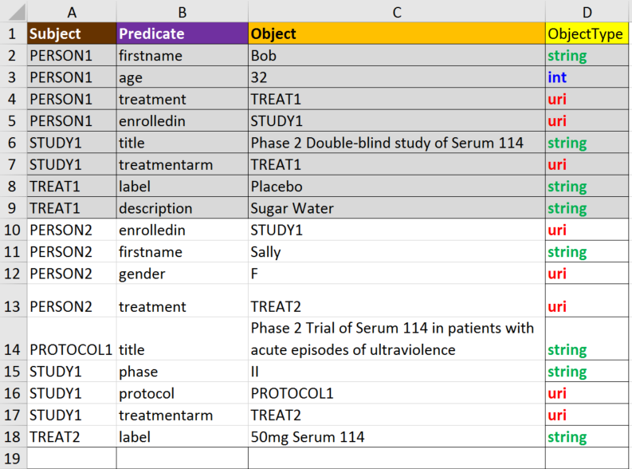

Introduction to Linked Data and Graph Databases
Hands-on Workshop
PhUSE 2017 Annual Conference
Edinburgh, Scotland
11 October, 2017
Instructor
Tim Williams
https://github.com/phuse-org/LinkedDataWorkshop
Outline
- Introduction
- Server Login
- Data as a Graph
- Exercises
- Neo4j Labeled Property Graph (LPG)
- Resource Description Framework (RDF)
- Demonstrations (time permitting)
- SDTM as LGP
- SDTM as RDF
Outline
- Introduction
- Server Login
- Data as a Graph
- Exercises
- Neo4j Labeled Property Graph (LPG)
- Resource Description Framework (RDF)
- Demonstrations (time permitting)
"Introduction to Linked Data and Graph Databases"
"From whiteboard to queryable graph: A (very basic) introduction to converting clinical trials concepts and values to Linked Data."
Materials
- Laptop - power up!
- Pencil + eraser, or pen
- Printed copies of:
- Exercises
- Neo4j Diagram
- RDF Diagram
Outline
- Introduction
- Server Login
- Data as a Graph
- Neo4j Labeled Property Graph (LPG)
- Resource Description Framework (RDF)
Server Login
Instructions in Exercises (Page 3)| Computer: | |
| User name: | phuseldw |
| Password: |
Outline
- Introduction
- Server Login
- Data as a Graph
- Neo4j Labeled Property Graph (LPG)
- Resource Description Framework (RDF)
Why Data as a Graph?
One Example: SDTM Domains
SDTM DM Domain

- What is wrong here?
- Inflexible, version specific row x column structure and format
- Mixture of concepts
- No integral metadata
- Data repetition
Graph Data can fix these problems!
Data as a Graph?

Compare Neo4j with RDF
Screen shot of interactive graph
Neo4j, RDF: More Core Differences
| Neo4j | RDF | |
|---|---|---|
| Query | Cypher | SPARQL |
| Traverse | Easier | Harder |
| Graph | Less complex, shallow | More complex, deep |
| Ontologies | Code them externally? | Many available & tools to make them. |
| Learning | Easier | Harder |
Outline
- Introduction
- Server Login
- Data as a Graph
- Exercises
- Neo4j Labeled Property Graph (LPG)
- Resource Description Framework (RDF)
- Demonstrations (time permitting)
1.1 Diagram the Model
"White board" the data
Handout: "Neo4j Diagram"
Approach
- Model instances, not ontology ; Real-life things, not a classifcation of types of things (ontology)
- Example: "Person1 participatesIn
Study1" not "Patients participateIn Studies"
- Example: "Person1 participatesIn
Study1" not "Patients participateIn Studies"
- See "Guidelines for Adding Nodes and Relations"
Add nodes to the model
Suggestions
- Site
- locatedIn Country
- has Investigator
- Person
- has Gender
- Study
- definedIn Protocol
1.2 Transfer Diagram to Spreadsheet

...wait for instructor when done!
1.3 Upload to Neo4j
1.4 Query and Visualize
Outline
- Introduction
- Server Login
- Data as a Graph
- Exercises
- Neo4j Labeled Property Graph (LPG)
- Resource Description Framework (RDF)
- Demonstrations (time permitting)
- Neo4j Labeled Property Graph (LPG)
2.1 Diagram the Model
Transfer your Neo4j Diagram to an RDF Diagram
Handout: "RDF Diagram"
2.2 Transfer Diagram to Spreadsheet (1/3)
2.2 Transfer Diagram to Spreadsheet (2/3)
- List Nodes and their Relations (ignore "ObjectType" in this step)
- Fill in the Object Type for each row.
Object Types
| Type | Description |
|---|---|
| uri | Object links to another node or could link to another node |
| string | Character string/value that does not link to other nodes |
| int | Integer number. No link to other nodes |
2.3 Create TTL File
2.4 Query and Visualize
Which to choose: Neo4j or RDF?
- Neo4j
- Graph path traversal
- Process flow, pathways
- Where connections (links) are key
- RDF
- Classifcation (ontologies), Rules
- XX
- XXX
Outline
- Introduction
- Server Login
- Data as a Graph
- Exercises
- Neo4j Labeled Property Graph (LPG)
- Resource Description Framework (RDF)
- Demonstrations (time permitting)